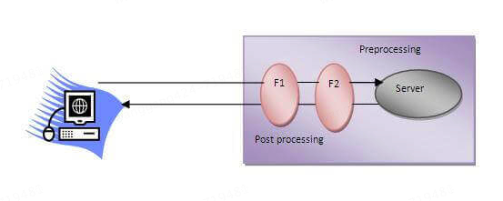

本书作者：测试开发刚哥，文章版权归个人所有，未经授权请勿转载。
Filter 是什么

Filter 用于对请求和响应进行预处理和后处理。Filter 链（Filter Chain）允许多个 Filter 依次处理同一个请求和响应。
Filter 的使用场景
- 日志记录：记录请求和响应的详细信息，例如请求时间、响应时间、请求参数等
- 安全检查：检查用户是否有权限访问特定资源，例如验证用户身份、检查用户角色等
- 压缩：对响应内容进行压缩，例如使用 GZIP 压缩响应数据
- 字符编码设置：设置请求和响应的字符编码，例如将请求和响应的字符编码设置为 UTF-8
- 输入验证：对请求参数进行验证，例如检查参数是否为空、参数格式是否正确等
Filter Interface
Filter 接口有 3 个方法：
package javax.servlet;
import java.io.IOException;
public interface Filter {
void init(FilterConfig var1) throws ServletException;
void doFilter(ServletRequest var1, ServletResponse var2, FilterChain var3) throws IOException, ServletException;
void destroy();
}
容器在启动时创建 Filter 实例，并调用其init(FilterConfig filterConfig)方法进行初始化。每次请求到达时，容器调用 Filter 的doFilter(ServletRequest request, ServletResponse response, FilterChain chain)方法进行过滤。容器在关闭时调用 Filter 的destroy()方法进行清理。
Filter 可以通过两种方式进行配置：
1.在 web.xml 中配置：
<filter>
<filter-name>MyFilter</filter-name>
<filter-class>com.example.MyFilter</filter-class>
</filter>
<filter-mapping>
<filter-name>MyFilter</filter-name>
<url-pattern>/*</url-pattern>
</filter-mapping>
如果采用 web.xml，那么去掉 Filter 只需要修改 web.xml 即可，不需要修改代码。
web.xml 在低版本 Servlet 是必须的，在高版本 Servlet 已经不再需要。
2.使用注解配置：
import javax.servlet.Filter;
import javax.servlet.FilterChain;
import javax.servlet.FilterConfig;
import javax.servlet.ServletException;
import javax.servlet.ServletRequest;
import javax.servlet.ServletResponse;
import javax.servlet.annotation.WebFilter;
import java.io.IOException;
@WebFilter("/*")
public class MyFilter implements Filter {
@Override
public void init(FilterConfig filterConfig) throws ServletException {
// 初始化操作
}
@Override
public void doFilter(ServletRequest request, ServletResponse response, FilterChain chain)
throws IOException, ServletException {
// 预处理操作
System.out.println("Request received at " + System.currentTimeMillis());
// 继续执行下一个过滤器或目标资源
chain.doFilter(request, response);
// 后处理操作
System.out.println("Response sent at " + System.currentTimeMillis());
}
@Override
public void destroy() {
// 清理操作
}
}
FilterChain Interface
Filter 接口的 doFilter 方法，第 3 个参数类型是 FilterChain，它的定义如下：
package javax.servlet;
import java.io.IOException;
public interface FilterChain {
void doFilter(ServletRequest var1, ServletResponse var2) throws IOException, ServletException;
}
FilterChain 用于在 Servlet 过滤器链中传递请求和响应对象。FilterChain 的实现由 Servlet 容器（如 Tomcat、Jetty 等）负责。容器在部署应用时，会根据 web.xml 配置文件或注解扫描来确定过滤器的顺序，并创建一个 FilterChain 对象来管理这些过滤器。当chain.doFilter(request, response)被调用时，FilterChain 会递增索引并调用下一个过滤器的doFilter方法。如果没有更多的过滤器，FilterChain 会将请求传递给最终的目标资源（如 Servlet）。
FilterConfig Interface
FilterConfig 用于在过滤器初始化时提供配置信息，它包含了过滤器的初始化参数和 Servlet 上下文。主要方法如下：
String getFilterName()：返回过滤器的名称ServletContext getServletContext()：返回 Servlet 上下文对象String getInitParameter(String name)：根据参数名称获取初始化参数的值Enumeration<String> getInitParameterNames()：返回所有初始化参数的名称
Filter 示例
验证用户身份：
import javax.servlet.*;
import javax.servlet.http.HttpServletRequest;
import javax.servlet.http.HttpServletResponse;
import java.io.IOException;
public class AuthenticationFilter implements Filter {
@Override
public void init(FilterConfig filterConfig) throws ServletException {
// 初始化代码
}
@Override
public void doFilter(ServletRequest request, ServletResponse response, FilterChain chain) throws IOException, ServletException {
HttpServletRequest httpRequest = (HttpServletRequest) request;
HttpServletResponse httpResponse = (HttpServletResponse) response;
// 获取身份验证信息，例如从请求头中获取令牌
String authToken = httpRequest.getHeader("Authorization");
// 验证令牌
if (isValidToken(authToken)) {
// 如果令牌有效，继续处理请求
chain.doFilter(request, response);
} else {
// 如果令牌无效，返回401未授权状态
httpResponse.sendError(HttpServletResponse.SC_UNAUTHORIZED, "Unauthorized");
}
}
private boolean isValidToken(String token) {
// 令牌验证逻辑，例如检查令牌是否存在和有效
return token != null && token.equals("valid-token");
}
@Override
public void destroy() {
// 清理代码
}
}
统计访问用户数：
import java.io.*;
import javax.servlet.*;
public class MyFilter implements Filter {
static int count = 0;
public void init(FilterConfig arg0) throws ServletException {}
public void doFilter(ServletRequest req, ServletResponse res, FilterChain chain) throws IOException, ServletException {
PrintWriter out = res.getWriter();
// 继续传递请求和响应
chain.doFilter(req, res);
// 输出总访问人数
out.print("<br/>Total visitors " + (++count));
out.close();
}
public void destroy() {}
}
计算响应时长：
import java.io.*;
import javax.servlet.*;
public class MyFilter implements Filter {
static int count = 0;
public void init(FilterConfig arg0) throws ServletException {}
public void doFilter(ServletRequest req, ServletResponse res, FilterChain chain) throws IOException, ServletException {
PrintWriter out = res.getWriter();
long before = System.currentTimeMillis();
// 继续传递请求和响应
chain.doFilter(req, res);
long after = System.currentTimeMillis();
out.print("<br/>Total response time " + (after - before) + " milliseconds");
out.close();
}
public void destroy() {}
}
直接发送响应并关闭输出流：
import java.io.*;
import javax.servlet.*;
public class MyFilter implements Filter {
public void init(FilterConfig arg0) throws ServletException {}
public void doFilter(ServletRequest req, ServletResponse res, FilterChain chain) throws IOException, ServletException {
PrintWriter out = res.getWriter();
out.print("<br/>This site is under construction..");
out.close();
}
public void destroy() {}
}
总结，Filter 是一个强大的工具，可以在请求和响应的生命周期中进行各种预处理和后处理操作。通过合理使用 Filter，可以实现许多常见的 Web 应用需求，如日志记录、身份验证、授权、压缩等。
参考资料：
https://www.javatpoint.com/servlet-filter
ChatGPT